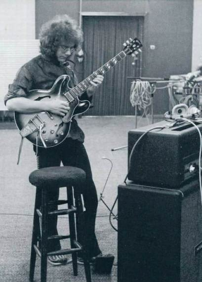
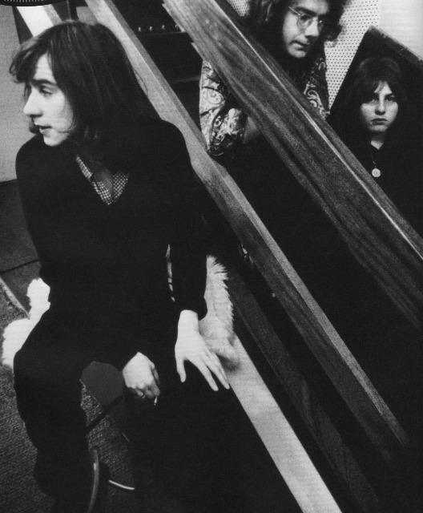
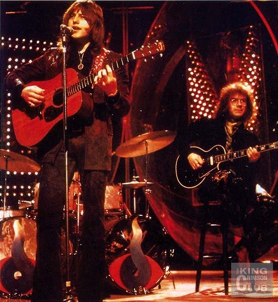
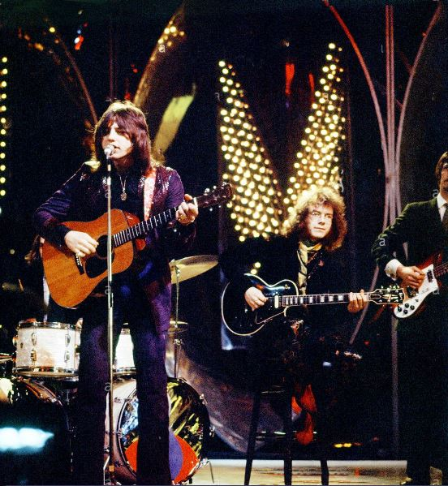
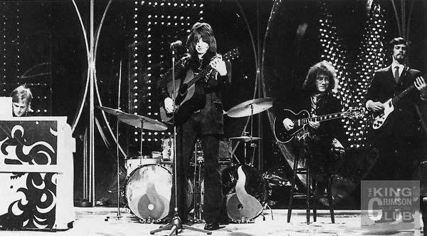
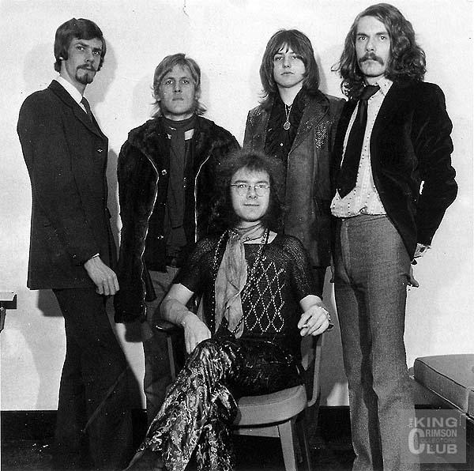
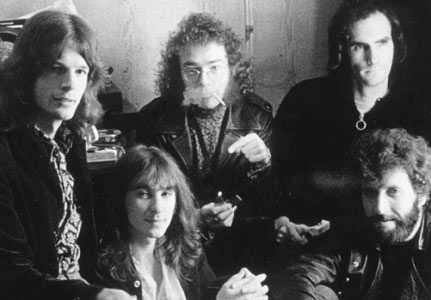

Fotos de 1970
Fotos de 1970
|
|
|
 Fotos de 1970
Abajo x3: Fripp, Sinfield y Lake, trío remanente después de la partida de McDonald y Giles.

Abajo x 2: Sinfield y Fripp después de que se fuera Lake.
El 25 de marzo de 1970 el quinteto Fripp-Lake-Tippett y hermanos Giles presentó el tema Cat Food en la BBC TV de Londres (con playback).  
  
 El KC que grabó "Lizard": Collins, Sinfield, Fripp, McCulloch y Haskell. |